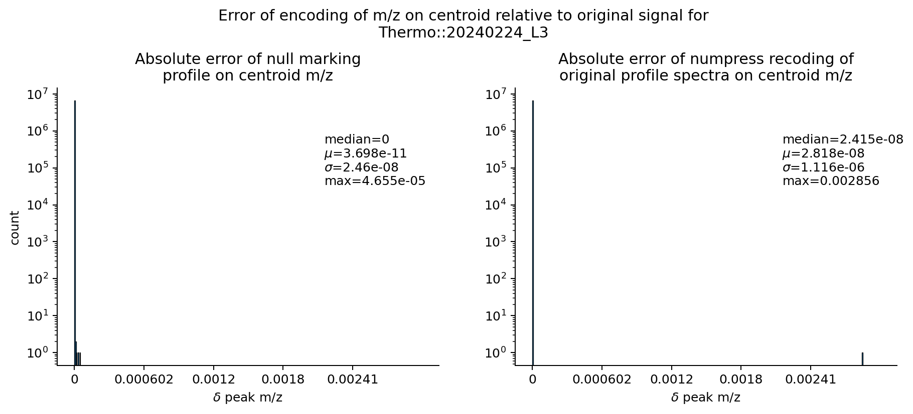
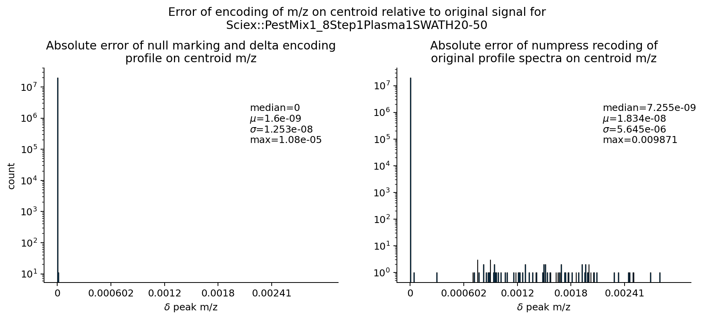

Signal Data Model¶
Arrays and columns¶
In mass spectrometry it is common to speak of a spectrum having an m/z array, as a synonym for having been measured in the m/z dimension, with a parallel intensity array giving the abundance of the signal at each m/z. In mzML, the two dimensions may even use different physical data types on different spectra in the same file, and there are legitimate use-cases for that.
mzPeak can store array data in two ways:
- As a column in a signal data layout — the array is burned into the schema and registered in the array index. It is encoded directly by Parquet, subject to Parquet's adaptive encoding and compression, and — crucially — can be searched and sliced via the page index.
- As an auxiliary array — stored in the associated
metadata table's
*.auxiliary_arraysvalue for that entity's row. Auxiliary arrays can be individually configured by the writer (custom compression, data type, decoding, or cvParams), but they cannot be searched or sliced without decoding the entire array, just as in mzML.
Currently, the first sorted array is assumed to be the axis around which all other values are arranged — sorting rank 0. Any arrays that are shorter or longer than this axis SHOULD be stored as auxiliary arrays instead.
Re-sort unsorted ranked arrays
When writing, if an array that has a sorting rank is not sorted, the entry's data arrays MUST be re-sorted accordingly. Failing to do so introduces integrity errors.
The Array Index¶
To annotate what kind of array a column is, mzPeak stores a JSON-serialised
array index in the Parquet key–value metadata.
It is a list of structures describing each array using controlled vocabulary. A
column is part of the Parquet schema and must always exist with a homogeneous
value type (or be null) for each row.
The array index is stored in the Parquet metadata of the
data arrays or
peaks files under
<entity_type>_array_index — e.g. spectrum_array_index for spectra or
chromatogram_array_index for chromatograms.
{
"prefix": "point",
"entries": [
{
"context": "spectrum", // This array describes a spectrum
"path": "point.mz", // Column path in the Parquet schema
"data_type": "MS:1000523", // CV term for the data type of this array
"array_type": "MS:1000514", // CV term for the array itself
"array_name": "m/z array", // Human-readable name; also where a custom
// `non-standard array` name is stored
"unit": "MS:1000040", // Values are in m/z
"buffer_format": "point", // This column uses the point layout
"transform": null, // No transformation applied
"data_processing_id": null, // Use the default data-processing method
"buffer_priority": "primary", // Default column for m/z queries
"sorting_rank": 0 // Sorted within entries; other arrays sort after
},
{
"context": "spectrum",
"path": "point.intensity",
"data_type": "MS:1000521",
"array_type": "MS:1000515",
"array_name": "intensity array",
"unit": "MS:1000131", // Detector counts
"buffer_format": "point",
"transform": null,
"data_processing_id": null,
"buffer_priority": "primary",
"sorting_rank": null // Imposes no sorting order on the data
}
]
}
This array index describes the table shown for the
point layout. It is governed by the JSON Schema
schema/array_index.json.
Buffer format¶
Depending on the signal data layout in use, arrays are stored in different
formats. The available buffer_format values are:
buffer_format |
Used by | Meaning |
|---|---|---|
point |
point | The array is stored in the point layout. The point layout is all-or-nothing — every array must be point. |
chunk_values |
chunked | The "main" axis values bounded between a chunk's start and end, encoded for better compressibility (in addition to Parquet's own encoding). |
chunk_start |
chunked | The starting value of the main axis for the chunk, inclusive. |
chunk_end |
chunked | The ending value of the main axis for the chunk, inclusive. It should be less than the next chunk's chunk_start. |
chunk_encoding |
chunked | A CURIE indicating how chunk_values was encoded. |
chunk_secondary |
chunked | Values of an array other than the main axis for the chunk. |
chunk_transform |
chunked | Raw bytes of an array in the chunk that was opaquely transformed (e.g. with MS-Numpress). May appear in addition to a referenced chunk_values or chunk_secondary column. |
The chunked layout currently supports a single chunking dimension. A file in the
chunked layout MUST use chunk_start, chunk_end, chunk_encoding, and
chunk_values exactly once each.
Buffer priority and naming¶
In Parquet, all column names and types must be known before writing, and no two columns may share the same name and path. Normally there is one coordinate column (e.g. m/z or time) and one intensity column. If you have intensity arrays with different units or data types, they must be defined as separate arrays in the array index and therefore have distinct names. While uncommon for spectra, this is unavoidable for diagnostic traces stored as chromatograms.
For ergonomics, common columns should have simple, consistent names — this makes
files easier to use from raw Parquet tooling. The most common version of each
array type (as defined by the implementation) SHOULD have a buffer_priority
of primary and receive a short, consistent name. The recommended short names:
| Accession | Name | Column name |
|---|---|---|
| MS:1000514 | m/z array | mz |
| MS:1000515 | intensity array | intensity |
| MS:1000516 | charge array | charge |
| MS:1000517 | signal to noise array | signal_to_noise |
| MS:1000595 | time array | time |
| MS:1000617 | wavelength array | wavelength |
| MS:1002530 | baseline array | baseline |
| MS:1002529 | resolution array | resolution |
| MS:1002893 | ion mobility array | ion_mobility |
| MS:1003007 | raw ion mobility array | raw_ion_mobility |
| MS:1002816 | mean ion mobility array | mean_ion_mobility |
| MS:1003154 | deconvoluted ion mobility array | deconvoluted_ion_mobility |
| MS:1003008 | raw inverse reduced ion mobility array | raw_inverse_reduced_ion_mobility |
| MS:1003006 | mean inverse reduced ion mobility array | mean_inverse_reduced_ion_mobility |
| MS:1003155 | deconvoluted inverse reduced ion mobility array | deconvoluted_inverse_reduced_ion_mobility |
| MS:1003153 | raw ion mobility drift time array | raw_drift_time |
| MS:1002477 | mean ion mobility drift time array | mean_drift_time |
| MS:1003156 | deconvoluted ion mobility drift time array | deconvoluted_ion_mobility_drift_time |
Data arrays, encoding, transformations, and Parquet¶
Parquet can write page indices on any leaf column, based on the value being stored before its encoding and compression. This means we must take care when storing data cleverly: a transformation that obscures the stored value from the page index also disables predicate filtering on it. The techniques below are written in terms of spectra but apply more broadly.
Zero run stripping¶
Some vendors produce profile arrays with large "empty" regions of zero-intensity points along a semi-regular m/z axis. These regions hold little information, so all but the first and last zero-intensity points of a run are removed. This is only meaningful for profile data; readers SHOULD assume that zero runs have been stripped.
A zero run is a sequence of three or more zero values, reduced to just its first and last positions. Zero runs can be very long and, outside of scenarios that assume a complete coordinate grid, provide no value. If a zero run needs to be reconstructed beyond the flanking points, the same method used for filling null-marked values can extend the run.
Python — finding the positions that are not part of a zero run
def find_where_not_zero_run(data: Sequence[Number]) -> Sequence[int]:
"""
Construct a list of positions that are not part of a zero run.
A zero run is any position *i* such that:
1. ``x[i] == 0``
2. ``(i == 0) or (x[i - 1] == 0)``
3. ``(i == (len(x) - 1)) or (x[i + 1] == 0)``
We build a position list because we need to extract these positions
from ALL dimension arrays for this entity, not just the current array.
"""
n = len(data)
n1 = n - 1
was_zero = False
acc = []
i = 0
while i < n:
v = data[i]
if v is not None:
if v == 0:
if (was_zero or (len(acc) == 0)) and ((i < n1 and data[i + 1] == 0) or i == n1):
pass
else:
acc.append(i)
was_zero = True
else:
acc.append(i)
was_zero = False
else:
acc.append(i)
was_zero = False
i += 1
return np.array(acc, dtype=np.uintp)
Null marking¶
For spectra with many small gaps, even zero-run stripping leaves too much
unhelpful information. Instead, we can replace the flanking zero-intensity points
with null m/z and intensity values; Parquet then skips storing the expensive
32- and/or 64-bit values, retaining only the validity-bitmap bit. Separately, we
fit a simple m/z-spacing model by weighted least squares of the form:
Python — fitting the weighted least-squares spacing model
class DeltaCurveRegressionModel:
beta: np.ndarray
def __init__(self, beta: np.ndarray):
self.beta = beta
@classmethod
def fit(cls, mz_array, delta_array, weights=None, threshold=None, rank=2):
if weights is None:
weights = np.ones(len(mz_array))
if threshold is None:
threshold = 1.0
# Drop all entries where the gap between m/z values > threshold
raw = mz_array[1:][delta_array <= threshold]
w = weights[1:][delta_array <= threshold]
y = delta_array[delta_array <= threshold]
# Build the design matrix
data = [np.ones_like(raw)]
for i in range(1, rank + 1):
data.append(raw**i)
data = np.stack(data, axis=-1)
# Use the QR decomposition to solve the weighted least-squares problem
# to estimate weights predicting δ m/z.
# https://stats.stackexchange.com/a/490782/59613
chol_w = np.sqrt(w)
qr = np.linalg.qr(chol_w[:, None] * data)
v = qr.Q.T.dot(chol_w * y)
beta = solve_triangular(qr.R, v)
# Numerically equivalent to and more stable than the direct inversion
# beta = np.linalg.inv((data.T * w).dot(data)).dot(data.T * w).dot(y)
return cls(beta)
def predict(self, mz: float) -> float:
acc = self.beta[0]
for i in range(1, len(self.beta)):
acc += self.beta[i] * mz ** i
return acc
When reading null-marked data, use either the local second-median \(\delta mz\) or the learned model for that spectrum to compute the m/z spacing for singleton points, achieving a very accurate reconstruction. Because the non-zero m/z points are unchanged, a peak's apex or centroid is unaffected. If a peak is composed of only three points — including the two zero-intensity flanks — no meaningful peak model can be fit anyway, so the minuscule angle change is effectively lossless.
The model parameters learned for each entry MUST be stored in that entry's
row in the associated metadata table, as mz_delta_model.
Open item — generalise mz_delta_model
Should mz_delta_model become a CV parameter and be dissociated from m/z
specifically, so the same mechanism can serve other coordinate axes? This is
likely desirable.


All MS-Numpress compression methods remain available and still give superior size reduction, at the cost of slightly larger accuracy loss. Using Numpress is a transformation and requires the chunked layout.
Finding flanking zero pairs¶
Zero-intensity points on the flanks of peaks still cost non-trivial storage in
sparse datasets. This step matches only the zero-intensity points that occur on
the flanks of profile peaks — not all zero-intensity points. Once found, these
indices construct the null mask (the Arrow "validity bitmap"), which is
equivalent to how a Parquet column chunk would represent them.
Python — masking positions that are two zeros in a row
def is_zero_pair_mask(data: Sequence[Number]) -> "np.typing.NDArray[np.bool_]":
'''Create a boolean mask for positions composed of two zeroes in a row.'''
n = len(data)
n1 = n - 1
was_zero = False
acc = []
for i, v in enumerate(data):
if v == 0:
if was_zero or (i < n1 and data[i + 1] == 0):
acc.append(True)
else:
acc.append(False)
was_zero = True
else:
acc.append(False)
was_zero = False
return np.array(acc)
Decoding null pairs¶
Decoding null pairs — undoing null marking — means finding regions bounded by two
nulls (or by the start of the array and a null, or a null and the end of
the array), then filling the null values with either a locally estimated value
(when more than one value is available to estimate the median delta) or the
regression model described above (for a single point).
Unpaired null values MAY appear only as the first or last null in the
array; any other unpaired null is an unrecoverable error. A run of three or
more null values MAY be recoverable but should not occur under normal
operation.
The locally estimated value SHOULD be the second median of the spacing of the
current segment's non-null values. The regression model predicts the spacing
from the single non-null value of a segment that has only one.
Python — filling null-marked values
def find_pairs(mask: Sequence[bool]) -> Sequence[int]:
"""
Construct index ranges between pairs of ``True`` values in ``mask``.
The first and last ranges include the start and end of the array even if
the mask does not begin/end with a ``True``. The result has two columns:
the start and end indices of each span between two ``True`` values (or the
array termini).
.. warning::
This can fail or produce incorrect output if there are runs of ``True``
values longer than 2. Buffer all data for an entry before calling this
so that batches do not artificially disrupt pairs.
"""
parts = []
indices = np.where(mask)[0]
if len(indices) == 0:
return np.array([[0, len(mask)]])
if indices[0] != 0:
parts.append([0])
parts.append(indices)
if indices[-1] != len(mask) - 1:
parts.append([len(mask) - 1])
indices = np.concat(parts)
indices = indices.reshape((-1, 2))
indices[:, 1] += 1
return indices
def estimate_median_delta(data: Sequence[Number]) -> tuple[Number, np.typing.NDArray]:
"""Find the 2nd median of ``np.diff(data)`` — a crude spacing estimate."""
deltas = np.diff(data)
median = np.median(deltas)
deltas_below = deltas[deltas <= median]
median = np.median(deltas_below)
return median, deltas_below
def fill_nulls(data: pa.Array, common_delta: DeltaModelBase) -> "np.typing.NDArray":
"""Fill ``null`` values using ``common_delta`` or a locally estimated median delta."""
if not isinstance(common_delta, DeltaModelBase):
if isinstance(common_delta, Number):
common_delta = ConstantDeltaModel(common_delta)
else:
common_delta = DeltaCurveRegressionModel(np.asarray(common_delta))
pair_indices = find_pairs(data.is_null())
chunks = []
for (start, end) in pair_indices:
chunk = np.asarray(data.slice(start, end - start))
n = len(chunk)
has_real = chunk[~np.isnan(chunk)]
n_has_real = len(has_real)
if n_has_real == 1:
# A singleton point with one or two sides to pad
if n == 2:
if np.isnan(chunk[0]):
chunk[0] = chunk[1] - common_delta(chunk[1])
else:
chunk[1] = chunk[0] + common_delta(chunk[0])
elif n == 3:
dx = common_delta(chunk[1])
chunk[0] = chunk[1] - dx
chunk[2] = chunk[1] + dx
else:
raise Exception()
else:
# A run of values — estimate a more accurate delta from the data
dx, _ = estimate_median_delta(has_real)
if np.isnan(chunk[0]):
chunk[0] = chunk[1] - dx
if np.isnan(chunk[-1]):
chunk[-1] = chunk[-2] + dx
chunks.append(chunk)
return np.concat(chunks)
Null semantics for signal data¶
Unless otherwise noted, readers SHOULD treat null values in the sorting-
rank-0 array of an entry as governed by this model, with parallel null values
in any intensity arrays read as 0. The former should carry a transform of
MS:1003901 and the latter a
transform of MS:1003902. All
other values at those points are read as-is, with null semantics meaning the
value was absent. Writers using null marking SHOULD use null only for the
first sorting dimension and its associated intensity value; all other columns
should be written as-is.
Why a top-level node?¶
Couldn't we just unwrap the top-level point/chunk struct and move on?
Perhaps, but keeping a top-level node open three doors:
- Clear schema signalling. When you see
pointat the root of the schema you know this is a point-layout file, not a chunked-layout one. - Unaligned proprietary data. A specialised writer or reader might embed information not directly connected to the primary schema's addressable unit (a spectrum, a data point). The top-level node leaves a place for that.
- Future table packing. Early in mzPeak's design we tried to pack tables together as much as possible (as in the packed parallel tables layout), but that proved very inefficient to write despite being no slower to read — possibly an implementation detail rather than a Parquet limitation. Keeping a top-level node leaves the door open to revisit this without a schema-breaking change.